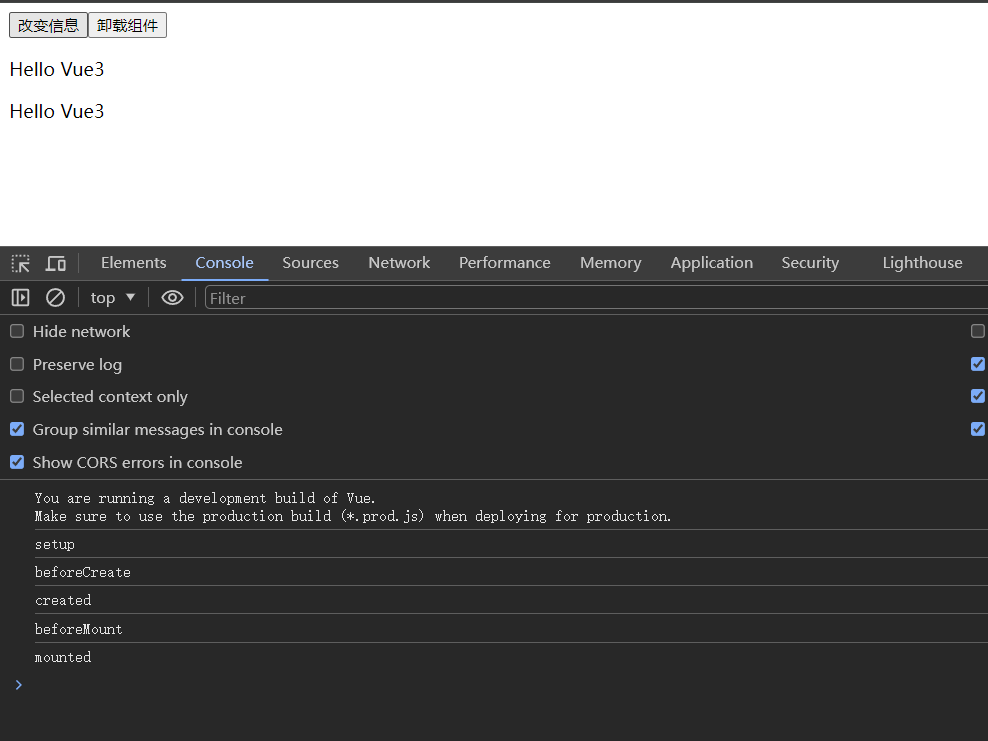
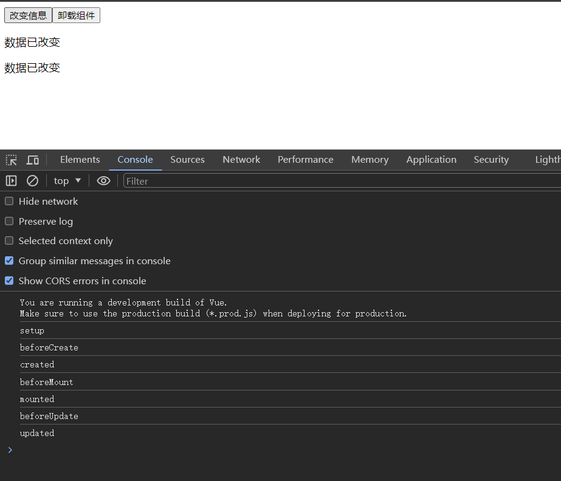
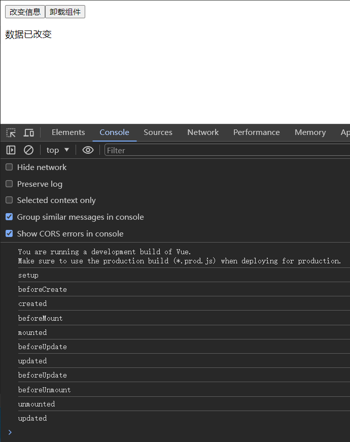

学习 VUE, 就不得不了解 VUE 的生命周期函数。 下面这张图来自 VUE 官网

其中 setup 函数是 VUE3 新加入的特性， 通过组合式 API 可以让我们的代码更具有可读性和可维护性。
我们随便写点代码来验证一下
<!DOCTYPE html>
<html lang="zh">
<head>
<meta charset="UTF-8" />
<meta name="viewport" content="width=device-width, initial-scale=1.0" />
<title>VUE3 生命周期学习</title>
<script src="https://unpkg.com/vue@3/dist/vue.global.js"></script>
</head>
<body>
<div id="app">
<button @click="changeMessage">改变信息</button>
<button @click="unmountComponent">卸载组件</button>
<p>{{ message }}</p>
<child-component
v-if="!componentUnmounted"
:message="message"
></child-component>
</div>
<script>
const ChildComponent = {
props: ["message"],
beforeUnmount() {
console.log("beforeUnmount");
},
unmounted() {
console.log("unmounted");
},
template: `<p>{{ message }}</p>`,
};
const App = {
data() {
return {
message: "Hello Vue3",
componentUnmounted: false,
};
},
components: {
"child-component": ChildComponent,
},
beforeCreate() {
console.log("beforeCreate");
},
created() {
console.log("created");
},
beforeMount() {
console.log("beforeMount");
},
mounted() {
console.log("mounted");
},
beforeUpdate() {
console.log("beforeUpdate");
},
updated() {
console.log("updated");
},
beforeUnmount() {
console.log("beforeUnmount");
},
unmounted() {
console.log("unmounted");
},
setup() {
console.log("setup");
},
methods: {
changeMessage() {
this.message = "数据已改变";
},
unmountComponent() {
this.componentUnmounted = true; // trigger component unmount
},
},
};
const app = Vue.createApp(App).mount("#app");
</script>
</body>
</html>
初始化打开浏览器： 
点击改变信息按钮： 
点击卸载组件按钮： 可以看到，卸载了子组件后，又重新渲染的界面。 
至此，我们就对 VUE3 的生命周期有了一个直观的认识。
在编写 VUE 代码时也可以做到心中有数。